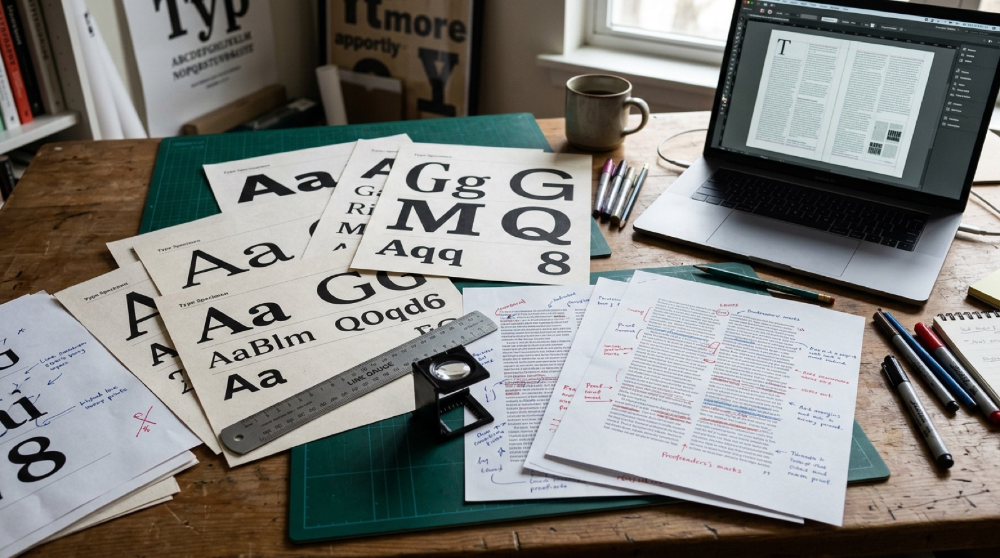

Warum Typografie gestalten?
Fast alles, was Menschen auf einem Bildschirm tun, beginnt mit Lesen: Menüs, Buttons, Meldungen, Artikel. Typografie entscheidet, ob ein Text mühelos aufgenommen wird oder ob er anstrengt, übersehen oder missverstanden wird. Ein brillantes Backend nützt wenig, wenn das Frontend unlesbar ist.

Was Sie in diesem Modul erwartet
Lesbarkeit
Der Text selbst
Zeilenabstand, Zeilenlänge und Laufweite bestimmen, ob das Auge ruhig durch den Text gleitet. Kleine Werte, große Wirkung.
Leitfrage: „Liest man es, ohne es zu bemerken?“
Ordnung
Text auf der Fläche
Abstände und visuelle Hierarchie gliedern Inhalte und führen den Blick vom Wichtigen zum Detail.
Leitfrage: „Sieht man sofort, was zusammengehört?“
Wirkung und Zugang
Text für alle
Schriftwahl und Farbe prägen den Charakter eines Textes. Kontrast und Struktur entscheiden, ob er für alle zugänglich ist.
Leitfrage: „Passt es, und können es alle lesen?“
Laborübungen
- 01Zeilenabstand (Leading): Warum graue Textblöcke schwer lesbar sind und wie man Luft zum Atmen in Fließtexten schafft.
- 02Zeilenlänge & Spaltensatz: Wie die Breite eines Textblocks die Lesbarkeit beeinflusst und wann ein Mehrspaltensatz die elegantere Lösung ist.
- 03Laufweite (Tracking): Wie der Abstand zwischen Buchstaben das Wortbild beeinflusst und wann wir diesen Raum manipulieren müssen.
- 04Innen- und Außenabstände: Padding und Margin richtig einsetzen – für Lesbarkeit, visuelle Gruppierung und harmonische Layouts.
- 05Visuelle Hierarchie: Wie Sie den Blick des Nutzers durch gezielte Kontraste (Gewicht, Größe, Raum) lenken.
- 06Schriftpaarungen (Type Pairing): Wie zwei Schriften harmonisch zusammenwirken und warum Kontrast ohne Konflikt das entscheidende Prinzip ist.
- 07Farbwirkung: Wie Farbkombinationen die Wirkung von Typografie verändern und welche Kontraste für Lesbarkeit sorgen.
- 08Barrierefreiheit: Gesetzliche Grundlagen (BFSG, WCAG, BITV), Kontrast-Checks nach WCAG AA und die korrekte Formulierung von Alternativtexten.
Referenzbereich
- REFGlossar: Die wichtigsten typografischen Fachbegriffe auf einen Blick -- von Geviert bis Versalhöhe.
- REFDIN 16518: Die elf Klassen der Schriftklassifikation mit Beispielschriften, gerendert in der jeweiligen Schriftart.
- REFRechtschreibung: Häufige Rechtschreibregeln, Abkürzungen und typografische Konventionen im deutschsprachigen Raum.
- REFWissenschaftliches Schreiben: Richtig zitieren, Quellenangaben (auch für Webseiten, Videos und Social Media), Zitierstile im Vergleich (APA, Harvard, Chicago, IEEE) und formale Grundregeln.
Lernziele
Nach Bearbeitung des Moduls können Sie …
- Zeilenabstand, Zeilenlänge und Laufweite für gute Lesbarkeit begründet einstellen,
- Abstände mit Padding, Margin und einem 8-px-System konsistent setzen,
- eine visuelle Hierarchie mit Größe, Gewicht, Farbe und Abstand aufbauen,
- Schriften begründet kombinieren und nach DIN 16518 einordnen,
- Texte barrierefrei gestalten und Kontraste nach WCAG prüfen,
- Rechtschreib- und Zitierregeln in Ihren Studienarbeiten sicher anwenden.
So arbeiten Sie mit dem Modul
Die Laborübungen 01–08 bauen aufeinander auf. Jede hat Schieberegler oder Aufgaben mit sofortiger Rückmeldung.
Glossar, DIN 16518, Rechtschreibung und wissenschaftliches Schreiben helfen auch später bei Projekten und Abschlussarbeiten.
Das Typografie-Quiz mit 15 Fragen fasst das Modul zusammen. Ihr Fortschritt bleibt in diesem Browser gespeichert.
Raster und Layout: Spaltenraster, Grundlinienraster, Satzspiegel und das responsive 12-Spalten-Raster behandelt das Lernmodul 02 Layout und Raster.
Zeitbedarf: etwa 3 Stunden für alle Laborübungen. Die Übungen funktionieren auch einzeln, etwa als Einstieg in eine Seminarsitzung.